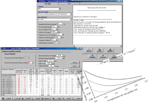
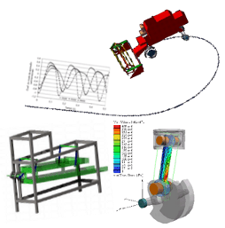

Biblioteca | UFGDNet | SCA | Webmail


Bem-vindo Este é um site destinado a apresentar informações profissionais do Professor Cristiano Márcio Alves de Souza
Áreas de Atuação:
Máquinas e Implementos Agrícolas Engenharia de Sistemas Agrícolas Modelagem e Simulação Matemática de Sistemas Agroindustriais Propriedade Intelectual e Inovação Tecnológica
Máquinas e Implementos Agrícolas
Engenharia de Sistemas Agrícolas
Modelagem e Simulação Matemática de Sistemas Agroindustriais
Propriedade Intelectual e Inovação Tecnológica
Associação Latino-americana de Engenharia Agrícola
Associação Brasileira de Engenharia Agrícola
Copyright © 2005 - 2012 Cristiano Marcio
R. João Rosa Goes 1761, Dourado, MS, CEP 79.825-070
Universidade Federal da Grande Dourados Faculdade de Ciências Agrárias
Grupo de Pesquisa e Desenvolvimento Tecnológico Engenharia de Sistemas Agrícolas Mecanizados
 Máquinas
e Implementos AgrícolasEngenharia
de Sistemas AgrícolasModelagem e
Simulação Matemática de Sistemas
AgroindustriaisPropriedade
Intelectual e Inovação Tecnológica
Máquinas
e Implementos AgrícolasEngenharia
de Sistemas AgrícolasModelagem e
Simulação Matemática de Sistemas
AgroindustriaisPropriedade
Intelectual e Inovação Tecnológica